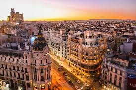
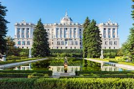
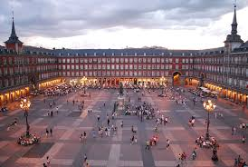
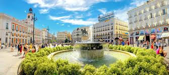

Madryt jest stolicą Hiszpani i jednym z największych miast w Europie. Miasto leży w samym centrum kraju. Słynie z pięknej architektury, muzeów i tętniącego życiem centrum. W Madrycie znajduje się wiele ważnych zabytków oraz placów. To także siedziba znanego klubu piłkarskiego Real Madrid. Miasto jest popularnym miejscem turystycznym odwiedzanym przez miliony ludzi każdego roku.

Pałac Królewski to jeden z najważniejszych zabytków w Madrycie. Jest oficjalną rezydencją króla Hiszpanii, choć obecnie nie mieszka tam na stałe. Budynek powstał w XVIII wieku. Pałac ma ponad 3000 pomieszczeń. Jest jednym z największych pałaców królewskich w Europie.

Plaza Mayor to historyczny plac w centrum Madrytu. Powstał w XVII wieku. Otaczają go charakterystyczne kamienice z arkadami. Dawniej odbywały się tu targi, uroczystości i walki byków. Dziś jest popularnym miejscem spotkań i turystów.

Puerta del Sol to jeden z najważniejszych placów w mieście. Znajduje się tu symboliczny punkt zerowy hiszpańskich dróg. Plac jest centrum życia Madrytu. Stoi tu słynny pomnik niedźwiedzia i drzewa. W sylwestra mieszkańcy jedzą tu winogrona na szczęście.